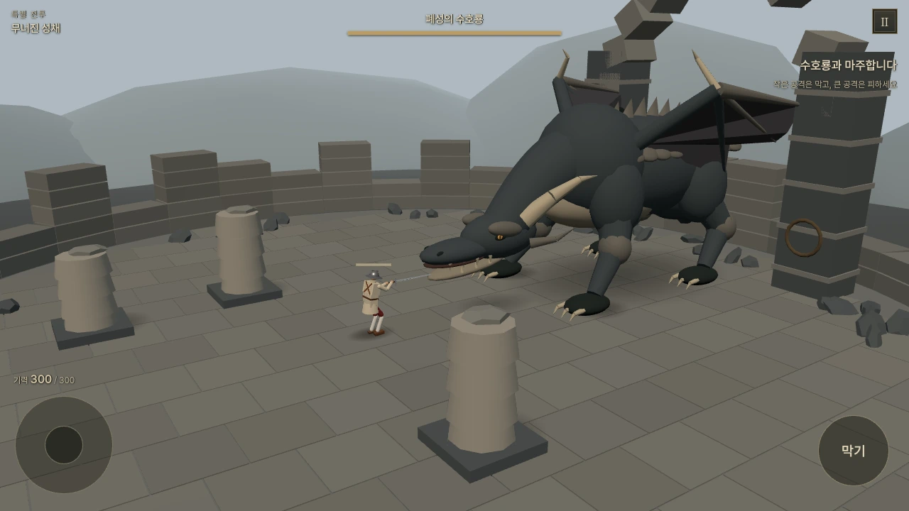
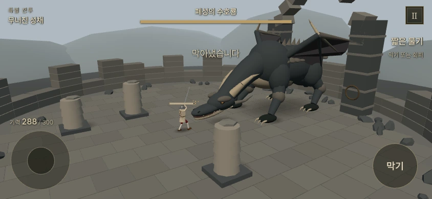
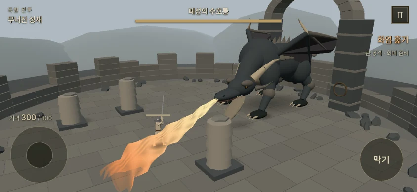
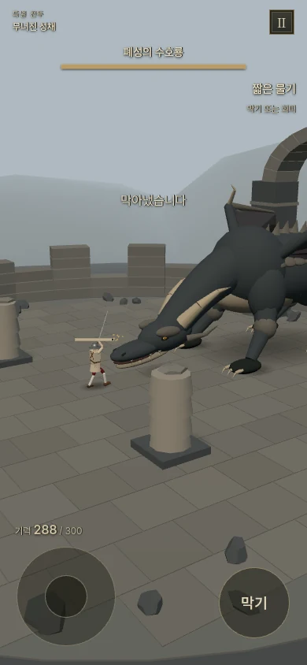
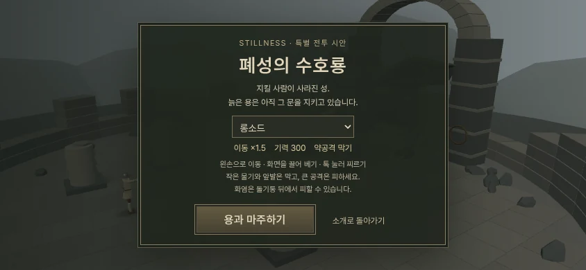

STILLNESS · 고정형 대형 용 · 개선판
폐성의 수호룡
무너진 성문을 가로막은 거대한 용. 머리와 앞발이 내려오는 틈을 노려 보세요.

고정형 개선판의 실제 게임 화면. 거대한 몸은 한쪽에 머물고, 머리와 앞발이 공격합니다.
용과 싸우기휴대폰은 가로 화면을 권합니다. 무기를 고르고 전투를 시작할 수 있습니다.
기력 300·이동 목표 속도1.5배를 유지합니다. 카메라 방향을 고정해 공격을 읽기 쉽게 하고, 용의 전면과 양옆을 오가며 피하고 공격하도록 바꿨습니다.
- 짧은 물기·앞발 견제: 용을 향해 막기를 유지하면 피해를 막습니다. 성공당 기력 12를 소모합니다.
- 큰 물기: 머리가 겨눈 방향이 고정된 뒤 옆으로 피하세요. 회복할 때 낮아진 목을 노릴 수 있습니다.
- 화염: 옆으로 빠지거나 돌기둥 뒤로 숨으세요. 기둥은 실제로 화염을 차단합니다.
왼쪽 조이스틱으로 이동, 화면을 끌어 베기, 짧게 눌러 찌르기, 오른쪽 버튼으로 막기. PC는 WASD·마우스·F를 사용합니다.
기존 저장에 영향을 주지 않는 독립 시험입니다. 유파별 칼 접촉 특수효과와 전투 보상은 아직 연결하지 않았습니다.
짧은 물기 막기 — 신체 피해 없이 기력 12를 소모합니다.

화염 훑기 — 날아가는 방향을 보고 피하거나 기둥을 이용합니다.
세로 화면과 시작 화면 보기


연구·최적화 내용과 이전 판 비교
일반 게임과 같은 색조와 안티앨리어싱을 사용하고, 겹친 목 조각과 구형 브레스를 이어진 표면으로 바꿨습니다. 그림자는 전장 전체를 반복 계산하는 대신 발밑 접지를 읽는 방식으로 단순화했습니다.
같은 해상도의 검사 서버에서 렌더 호출266→89회, 중앙 프레임 시간99.9→66.7ms. 실제 휴대폰 성능을 보장하는 수치는 아닙니다.
던전앤드래곤 연구·출처 · 이전 이동형 조작판